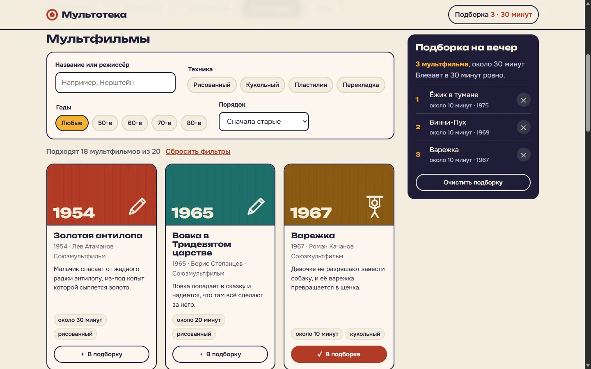
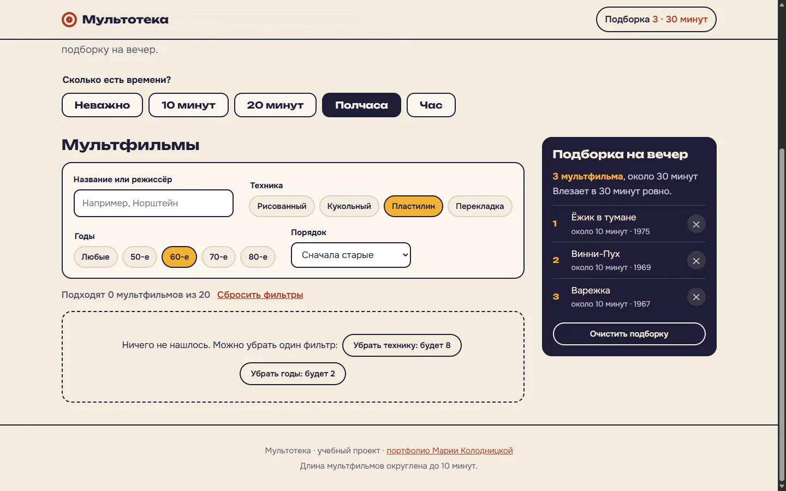
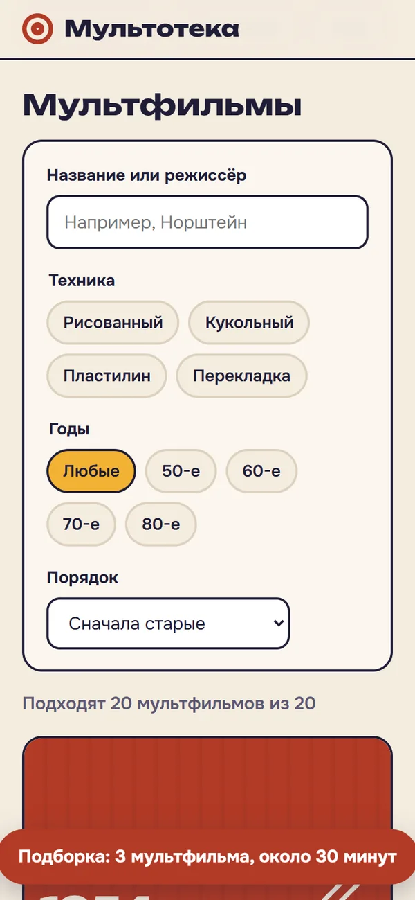

мини-сайт · учебный проект
Мультотека (по времени)
Задача
Каталог, который отвечает на вопрос родителя вечером: что включить ребёнку, если до сна 20 минут. И заодно что посмотреть самому.
Для кого
Родители, бабушки и дедушки, которые помнят эти мультфильмы, но не помнят, сколько они идут и кто их снял. Выбирают быстро и часто с телефона.

Решения и почему
Поиск и фильтры
- Время вынесено на первый экран: это главный фильтр, а не один из многих
- Пустой результат подсказывает, какой фильтр убрать, и сразу говорит, сколько тогда найдётся: "Убрать годы: будет 1"
- Поиск по названию и режиссёру не различает е и ё: "ежик" находит "Ёжик в тумане"
- Вместо постеров цветные кадры со значком техники: чужие картинки без прав не использую
Подборка на вечер
- Складывает время и сравнивает со свободным: "Это на 10 минут больше, чем есть времени"
- Сохраняется после перезагрузки страницы
- Очистку можно отменить кнопкой "Вернуть"
- Когда убираешь мультфильм из середины, фокус переходит на соседний, а не теряется
- На телефоне подборка видна плашкой внизу экрана




Как проверяла
| № | Что проверяю | Действие | Ожидаю | Получила | Итог |
|---|---|---|---|---|---|
| 1 | Фильтр по времени | 10 минут | Только короткие | 8 мультфильмов из 20 | пройдено |
| 2 | Два фильтра | 10 минут и пластилин | Один мультфильм | "Пластилиновая ворона" | пройдено |
| 3 | Пустой результат | Добавить 60-е | Подсказка, какой фильтр убрать | "Убрать технику: будет 4", "Убрать годы: будет 1" | пройдено |
| 4 | Кнопка из подсказки | Нажать "Убрать годы" | Фильтр снят, фокус на счётчике | 1 мультфильм, фокус на счётчике | пройдено |
| 5 | Поиск по режиссёру | "норштейн" маленькими буквами | Оба фильма Норштейна | "Ёжик в тумане", "Сказка сказок" | пройдено |
| 6 | Поиск без ё | "ежик" | Находит "Ёжик в тумане" | так и есть | пройдено |
| 7 | Подсчёт времени | 3 мультфильма на 40 минут при выборе "Полчаса" | Предупредить, что не влезает | "Это на 10 минут больше, чем есть времени" | пройдено |
| 8 | Удаление из середины | Убрать второй мультфильм | Фокус на соседнем пункте | фокус на "Убрать из подборки: Трое из Простоквашино" | пройдено |
| 9 | Отмена очистки | "Очистить подборку", затем "Вернуть" | Подборка вернулась, фокус на кнопке | так и есть | пройдено |
| 10 | Сортировка | "Сначала короткие" | Сначала 10 минут, в конце час | первые "Варежка", последняя "Снежная королева" | пройдено |
| 11 | Сохранение | Перезагрузить страницу | Подборка на месте | так и есть | пройдено |
Что нашла и исправила
- Кнопка "Очистить подборку" в пустой подборке. Стиль кнопки перебивал атрибут hidden. Нашла на скриншоте, а не в автотесте: тест проверял атрибут, а не то, что видно на экране.
- "Нашлось 1 мультфильм". Глагол не согласовывался с числом, теперь "Подходит 1 мультфильм".
- Первая подсказка для пустого результата всегда советовала выбрать больше времени, даже когда мешал фильтр по годам. Теперь подсказка считает каждый вариант.
- На телефоне счётчик подборки в шапке переносился на две строки. Убрала его, на телефоне подборку показывает плашка внизу.
axe не находит нарушений WCAG 2.1 A и AA, в том числе с открытой подборкой.


Что проверила бы на людях
- Выбирают ли время до того, как начать листать, или переключатель не замечают
- Понятна ли разница между техниками "рисованный" и "перекладка" без пояснения
- Нужна ли кнопка "Смотреть" со ссылкой на официальный канал студии